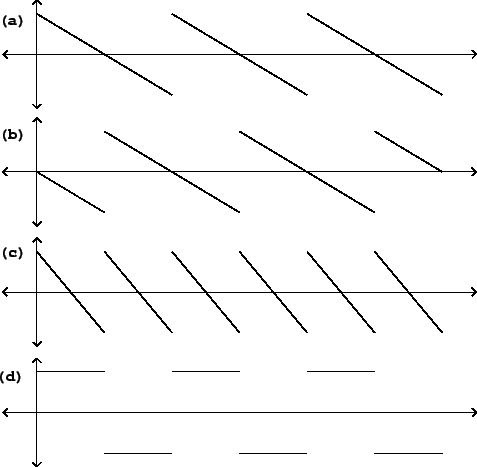

|  |
As an example, we apply the shift symmetry (even and odd harmonics) to a sawtooth wave. Figure 10.2 (part a) shows the original sawtooth wave and part (b) shows the result of shifting by a half cycle. The sum of the two (part c) drops discontinuously whenever either one of the two copies does so, and traces a line segment whenever both component sawtooth waves do; so it in turn becomes a sawtooth wave, of half the original period (twice the fundamental frequency). Subtracting the two sawtooth waves (part d) gives a waveform with slope zero except at the discontinuities. The discontinuities coming from the original sawtooth wave jump in the same direction (negative to positive), but those coming from the shifted one are negated and jump from positive to negative. The result is a square wave, a particular rectangle wave in which the two component segments have the same duration.
This symmetry was used to great effect in the design of Buchla analog synthesizers; instead of offering a single sawtooth generator, Buchla designed an oscillator that outputs the even and odd harmonic portions separately, so that cross-fading between the two allows a continuous control over the relative strengths of the even and odd harmonics in the analog waveform.